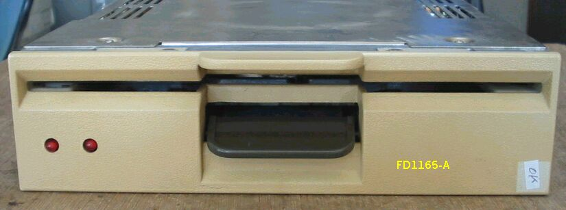
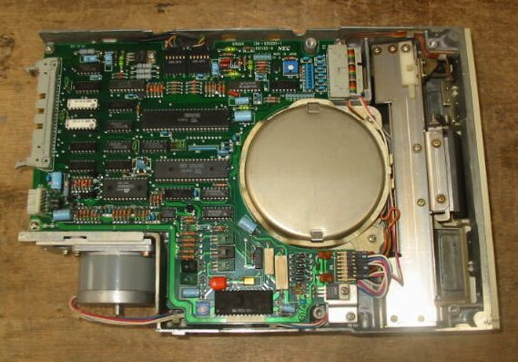
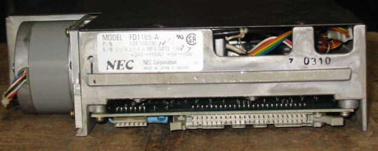
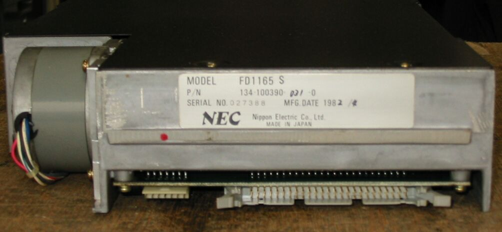

8インチFDD NEC FD1165-A
FD1165-Aの写真です。インターフェイスは、信号が50pin、電源は24V(18W)と5V（5W）です。



外付けFDD PC-8881に入っていた、FD1165 S です。1982年製と古いですが、まだ動くものも あります。
PC-8881は、ドライブの取り付けが、上下逆でちょっと見るとびっくりします。

(2005/10/05 追記）
98FDDのページに戻る